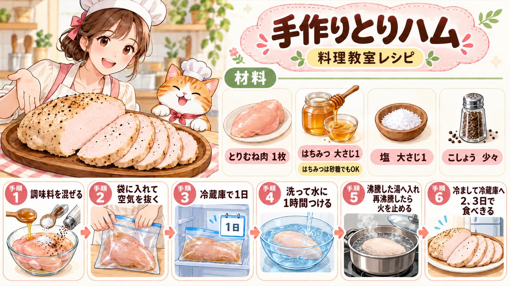

25 · 手作りハムのレシピ（2）
〜ずに・〜たまま・Vます語幹、・〜ところへ・〜きる
▶ 原音声

♡ 教科書の手順
ポスターで流れを確認してから、元の文章を読みましょう。
味をなじませる
ゆっくりゆでる
語法深度解析
1. Vない形＋ずに
【接續】動詞ない形去「ない」＋ずに（する→せずに）
【含義】不做……就……；沒有……而……。
「切らずに」表示不切雞胸肉，直接整塊放入碗中。意思大致等於「切らないで」，但「〜ずに」較常見於書面說明。
2. Vた形＋まま
【含義】保持……的狀態；就那樣……。
「袋に入れたまま」表示雞肉一直保持裝在塑膠袋裡的狀態，再放入冰箱。「水につけたまま」也同樣表示持續浸泡。
3. Vます形語幹、〜（中止形）
【接續】動詞ます形去「ます」＋、
【含義】連接前後兩個動作，語意相當於「〜て」，但較正式、較常用於書面說明。
「ボウルに入れ、水で〜を洗い流します」把「放入料理盆」和「用水沖洗」兩個先後動作連接起來。食譜、操作步驟和公告中很常見。
4. Vた形＋ところへ／ところに
【含義】正當……時／在……的階段，加入或發生另一個動作。
「ふっとうしたところへ」表示在水已經沸騰的時候，把雞肉放進去。這裡的「へ」指出動作進入的時間點與狀態。
5. Vます形語幹＋きる／きれない
【含義】把……全部做完／無法全部完成。
「食べきる」不是只吃一部分，而是全部吃完。「食べきってください」表示請在兩三天內把做好的雞肉火腿吃完。
中文參考
第 1 天
- 雞胸肉不切直接放進料理盆，先放蜂蜜，或者砂糖，接著鹽、胡椒，依序放入後均勻混合。
- 將完成的步驟 1 放入塑膠袋內，此時盡量不要讓空氣跑進去。
- 雞胸肉就這樣放在塑膠袋內，直接放入冰箱冷藏靜置 1 天。
第 2 天
- 將雞胸肉從塑膠袋內取出放入料理盆，用水將蜂蜜（砂糖）、鹽沖洗掉。
- 接著將雞胸肉浸在乾淨的水裡 1 小時。
- 鍋子裡煮水，水滾時將雞胸肉放進去。
- 等水再次沸騰，馬上將火關掉並蓋上鍋蓋。
- 直接靜置到變涼為止。
- 冷卻後取出放冰箱冷藏，請於兩三天內吃完。